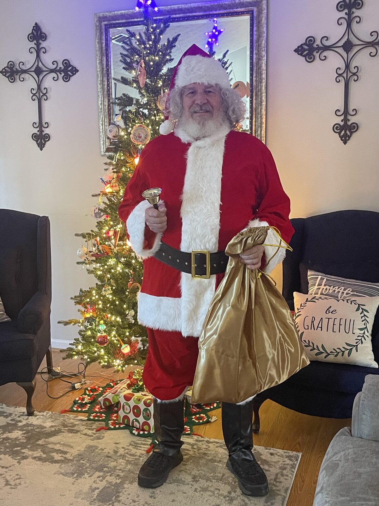

The man behind the suit — and why families and organizers trust him.

Santa GRAMPS is the Christmas presence of Dan Barton — known to his grandchildren as GRAMPS and to many others as a trusted pastor, chaplain, and friend.
For more than three decades he served as a pastor. He has also walked the halls of hospitals and sat at the bedsides of those nearing the end of life as a hospital and hospice chaplain. Before ministry, he worked on the factory floor. That combination of hard work, deep listening, and steady care shapes the way he shows up as Santa.
Children sense when an adult is fully present with them. Parents notice when someone treats their child with real respect. Organizers appreciate clear communication and a calm, professional approach. Those are the qualities Santa GRAMPS brings to every appearance.
The red suit is the same one children have always loved. What makes the experience different is the man wearing it — someone who has spent a lifetime learning how to be fully present with people of every age.
Simple. Steady. Child-centered.
No rushed lines or forced performances. Every child gets a moment that feels real.
Sensitive to different family situations, beliefs, and the wide range of what children hope for from Santa.
Straightforward communication, a simple written agreement, and reliable follow-through so organizers can relax.
Let’s talk about your event and see whether Santa GRAMPS is the right fit.
Book an Appearance